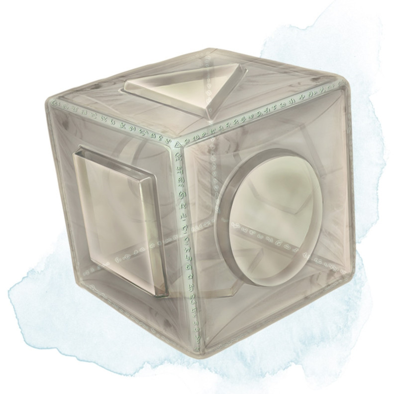

Cube of Force
[ Cube de force ]
Wondrous item, rare (requires attunement)
This cube is about an inch across. Each face has a distinct marking on it that can be pressed. The cube starts with 36 charges, and it regains 1d20 expended charges daily at dawn.
You can use an action to press one of the cube's faces, expending a number of charges based on the chosen face, as shown in the Cube of Force Faces table. Each face has a different effect. If the cube has insufficient charges remaining, nothing happens. Otherwise, a barrier of invisible force springs into existence, forming a cube 15 feet on a side. The barrier is centered on you, moves with you, and lasts for 1 minute, until you use an action to press the cube's sixth face, or the cube runs out of charges. You can change the barrier's effect by pressing a different face of the cube and expending the requisite number of charges, resetting the duration.
If your movement causes the barrier to come into contact with a solid object that can't pass through the cube, you can't move any closer to that object as long as the barrier remains.
The cube loses charges when the barrier is targeted by certain spells or comes into contact with certain spell or magic item effects, as shown in the table below.
You can use an action to press one of the cube's faces, expending a number of charges based on the chosen face, as shown in the Cube of Force Faces table. Each face has a different effect. If the cube has insufficient charges remaining, nothing happens. Otherwise, a barrier of invisible force springs into existence, forming a cube 15 feet on a side. The barrier is centered on you, moves with you, and lasts for 1 minute, until you use an action to press the cube's sixth face, or the cube runs out of charges. You can change the barrier's effect by pressing a different face of the cube and expending the requisite number of charges, resetting the duration.
If your movement causes the barrier to come into contact with a solid object that can't pass through the cube, you can't move any closer to that object as long as the barrier remains.
| Face | Charges | Effect |
|---|---|---|
| 1 | 1 | Gases, wind, and fog can't pass through the barrier. |
| 2 | 2 | Nonliving matter can't pass through the barrier. Walls, floors, and ceilings can pass through at your discretion. |
| 3 | 3 | Living matter can't pass through the barrier. |
| 4 | 4 | Spell effects can't pass through the barrier. |
| 5 | 5 | Nothing can pass through the barrier. Walls, floors, and ceilings can pass through at your discretion. |
| 6 | 0 | The barrier deactivates. |
The cube loses charges when the barrier is targeted by certain spells or comes into contact with certain spell or magic item effects, as shown in the table below.
| Spell or Item | Charges Lost |
|---|---|
| Disintegrate | 1d12 |
| Horn of blasting | 1d10 |
| Passwall | 1d6 |
| Prismatic spray | 1d20 |
| Wall of fire | 1d4 |
Dungeon Master´s Guide (SRD)
